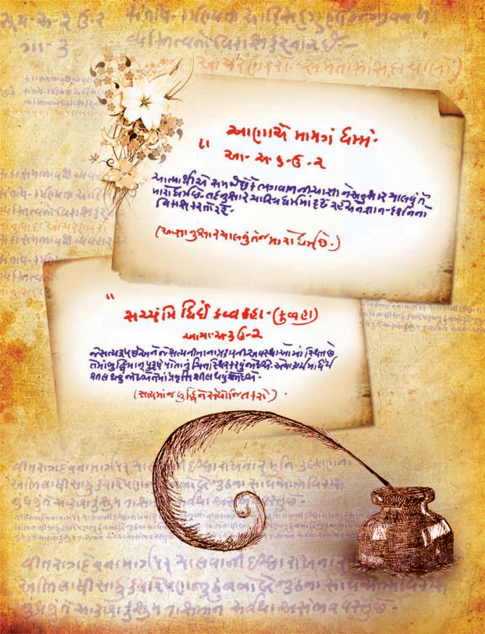
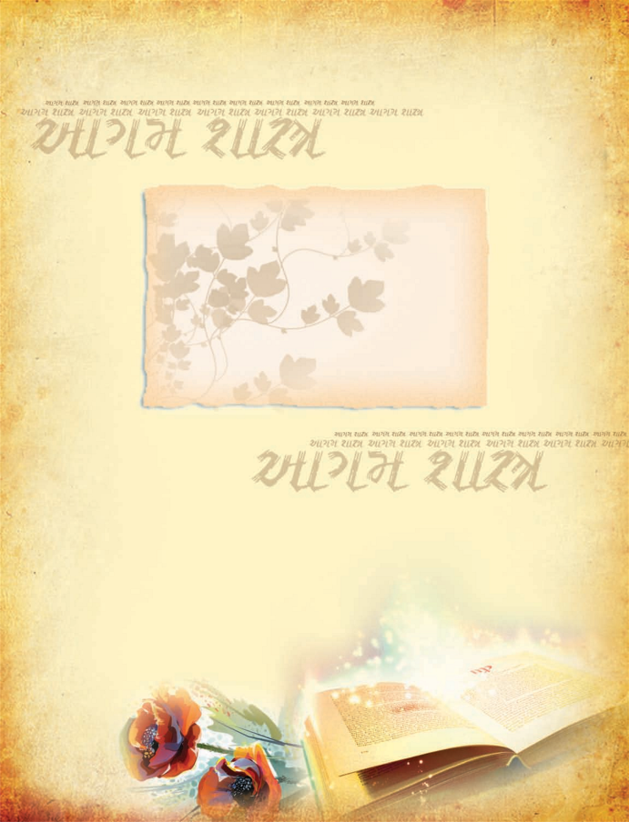
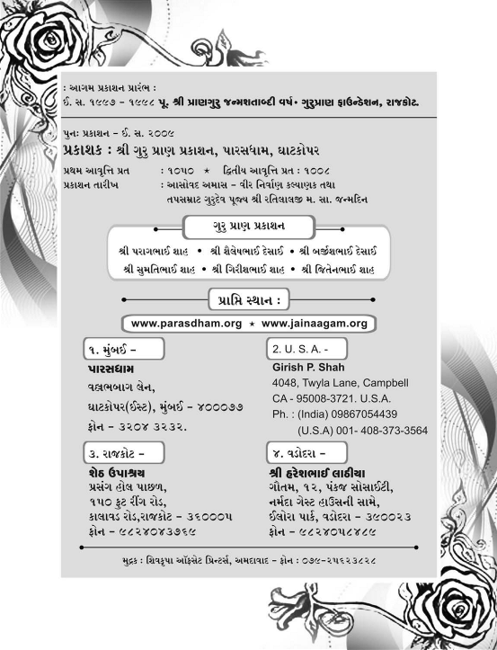
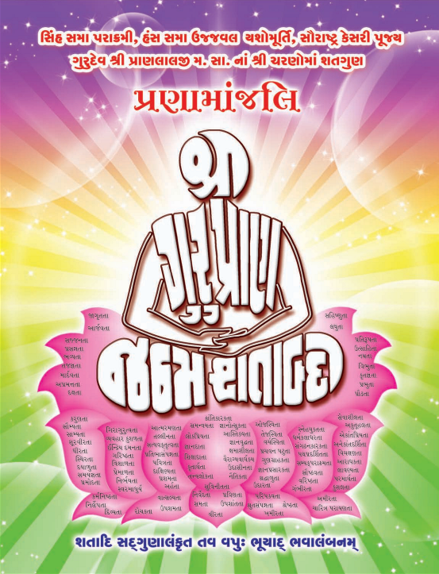

| નામ | ડુંગરસિંહભાઇ . |
| જન્મ | વિ.સં. ૧૭૯૨ : |
| જન્મભૂમિ | માંગરોળ. |
| પિતાશ્રી | ધર્મનિષ્ઠ શ્રીકમળસિંહભાઇ બદાણી. |
| માતુશ્રી | સંસ્કાર સંપન્ના શ્રીમતી હીરબાઇ . |
| જન્મસંકેત | માતાએ સ્વપ્નમાં લીલોછમ પર્વત અને કેસરી સિંહને પોતાની સમીપે આવતો જોયો . |
| ભાતૃભગિની | ચારબેન - બેભાઇ. |
| વૈરાગ્ય નિમિત્ત | પૂ. શ્રીરત્નચંદ્રજી મ.સા.નો ઉપદેશ. |
| સંચમ સ્વીકાર | વિ.સં. ૧૮૧૫કારતક વદ - ૧૦ દિવબંદર. |
| સદ્ગુરુદેવ | પૂ. શ્રીરત્નચંદ્રજી મ.સા. |
| સહદીક્ષિત પરિવાર |
સ્વયં , માતુશ્રી હીરબાઇ , બહેન વેલબાઇ,
ભાણેજી - માનકુંવરબેન અને ભાણેજ - હીરાચંદભાઇ. |
| સંચમ સાધના | અપ્રમત્તદશાની પ્રાપ્તિ માટે સાડા પાંચ વર્ષ નિદ્રાત્યાગ , જ્ઞાનારાધના , ધર્મશાસ્રો , દર્શનશાસ્રો અને તત્ત્વજ્ઞાનનો અભ્યાસ. |
| તપ આરાધના | રસેન્ટ્રિય વિજયના વિવિધ પ્રયોગો , મિતાહાર. સ્વાધ્યાય , સાડાપાંચ વરસ નિદ્રાત્યાગ , ધ્યાનરૂપ આભ્યંતર તપ. |
| ગોંડલ ગચ્છ સ્થાપના તથા આચાર્ય પદ પ્રદાન | વિ.સં. ૧૮૪૫ મહાસુદ - પ ગોંડલ. |
| જ્વલંત ગુણો | વિનય , વિવેક , વિચક્ષણતા , વિરક્તિ , કરૂણા , સમયસૂચકતા વગેરે… |
| પ્રમુખ શીષ્ય | પૂ. આચાર્ય શ્રી ભીમજી સ્વામી |
| પ્રમુખ શીષ્યા | પૂ. શ્રી હીરબાઈ મ., પૂ. શ્રી વેલબાઈ મ. પૂ. શ્રી માનકુંવરબાઇ મ. |
| સાધુસંમેલન | વિ. સં. ૧૮૬૧માં આજ્ઞાનુવર્તી ૪૫ જેટલા સાધુ- સાધ્વીજીઓનું સંમેલન કરી સંતોની આચાર વિશુધધિ માટે ૧૩ નિયમો બનાવ્યાં. |
| વિહાર ક્ષેત્ર | કાઠિયાવાડ , ઝાલાવાડ: કચ્છ , માંગરોળ , વેરાવળ , પોરબંદર , દીવબંદર આદિ કંઠાળ પ્રદેશમાં ગ્રામાનુગ્રામ. |
| પ્રતિબોધિત શ્રાવકવર્ય | શ્રી શોભેચંદ્ર કરસનજી શાહ - વેરાવળ. |
| સ્થિરવાસ | વિ.સં. ૧૮૭૧ ચૈત્ર સુદ - ૧૫ થી ગોંડલમાં. |
| અનશન આરાધના | વિ. સં. ૧૮૭૭ ફાગણ સુદ - ૧૩ થી અનશન પ્રારંભ , વેશાખ સુદ - ૧૫ સમાધિમરણ. |
| આયુષ્ય | ૮૪ વર્ષ સંયમ પર્યાય - ૬૨ વર્ષ , આચાર્ય પદ - ૩૨ વર્ષ. |
| ઉત્તરાધિકારી | આચાર્ય પૂ. શ્રી ભીમજી સ્વામી. |
| ઉપનામ | ગચ્છાધિપતિ , નિદ્રાવિજેતા , યુગપ્રધાન , એકાવતારી. |
| પાટપરંપરા |
ગોંડલ ગચ્છાધિપતિ આચાર્ય પ્રવર ગુરૂદેવ પૂ. શ્રીડુંગરસિંહજી મ.સા.
દ્રિતીય પટ્ધર - આચાર્ય પૂ. શ્રી ભીમજી સ્વામી. તૃતીય પટ્ધર - આચાર્ય પૂ. શ્રી નેણસી સ્વામી. ચતુર્થ પટ્ધર - આચાર્ય પૂ. શ્રી જેસંગજી સ્વામી. પંચમ પટ્ધર - આચાર્ય પૂ. શ્રી દેવજી સ્વામી. મહાતપસ્વી પૂ. શ્રી જયચંદ્રજી સ્વામી યુગદષ્ટા તપસ્વી પૂ. શ્રી માણેકચંદ્રજી મ.સા. સૌરાષ્ટ કેસરી ગુરુદેવ પૂ. શ્રી પ્રાણલાલજી મ.સા. તપસમ્રાટ ગુરુદેવ પૂ. શ્રી રતિલાલજી મ.સા. |
| વિદ્યમાન વિચરતો પરિવાર | ૧૧ સંતો , ૩૦૦ જેટલા સતિજીઓ. |
| શુભ નામ | પ્રાણલાલભાઈ |
| જન્મભૂમિ | વેરાવળ. |
| પિતા | શ્રીમાન શ્રી કેશવજીભાઈ મીઠાશા. |
| માતા | સંસ્કાર સંપજ્ઞા કુંવરબાઈ. |
| જ્ઞાતિ | વીસા ઓસવાળ. |
| જન્મદિન | વિ. સં. ૧૯૫૪ , શ્રાવણ વદ પાંચમ , સોમવાર. |
| ભાતૃ-ભગિની | ચાર ભાઈ , ત્રણ બહેનો. |
| વૈરાગ્ય બીજારોપણ | બે વર્ષની બાલ્યવયે. |
| વૈરાગ્ય ભાવ-પ્રગટીકરણ | ૧૩ વર્ષની કુમાર અવસ્થામાં. |
| સંયમ સ્વીકાર | ૨૧ માં વર્ષે વિ. સં. ૧૯૭૮ ફાગણ વદ છઠ્ઠ , ગુરવાર. તા. ૧૩-૩-૧૯૨૦ |
| દીક્ષા ભૂમિ | બગસરા-દરબાર વાજસુરવાળાના ઉઘ્યાનમાં વટવુક્ષ નીચે. |
| ગચ્છ પરંપરા | ગોંડલ ગચ્છ. |
| સંયમદાતા | મહાતપસ્વી પૂ. જયચંદ્રજી મ.સા. |
| શિક્ષા દાતા | પરમ શ્રદ્ધેય તપસ્વી માણેકચંદ્રજી મ. સા. |
| ધાર્મિક અભ્યાસ | આગમજ્ઞાન , તત્ત્વજ્ઞાન , કથા સાહિત્ય , રાસ સાહિત્ય , વ્યાકરણ , મહાકાવ્યો , કર્મસાહિત્ય , જૈનેતર ગ્રંથોનું વિશાળ અવલોકન , દર્શન શાસ્ત્રના તજજ્ઞ. |
| સંઘ નેતૃત્વ | ત્રણ વર્ષની દીક્ષા પર્યાયે તપસ્વી પૂ. માણેકચંદ્રજી.મ. સા. તા સંથારાના સમયથી. |
| સેવા શુશ્રૂષા | વડીલ સાત ગુરુભ્રાતા અને અનેક સંતોની સેવા કરી. |
| સમાજોત્કર્ષ | ચતુર્વિધ સંઘ સમાધિ માટે તારવેલા ત્રણ સિદ્ધાંત |
| ૧ ) લોકના પરોપકાર માટે દાનધર્મનિપ્રધાનતા | |
| ૨ ) અખંડનવાદ | |
| ૩ ) નીતિ અને પ્રામાણિકતાનું આંદોલન, જેન-જૈનેતરો (કાઠી , દરબાર , આહિર)ને સપ્ત વ્યસનથી મુક્તિ , અનેક સ્થાને સાધર્મિક રાહત યોજના. | |
| જ્ઞાન પ્રસાર | રાજકોટ , ગોંડલ , જેતપુર , ધોરાજી , વડિયા , વેરાવળ , પોરબંદર , માંગરોળ , જામનગર , ભાવનગર વગેરે અનેક સ્થાને જ્ઞાન ભંડાર , વિધાલયની સ્થાપના અને જીર્ણોધ્ધાર. |
| દેહ વૈભવ | લાવણ્યમયી મુદ્રા , સૂર્ય સમ તેજસ્વી મુખ , ચંદ્રસમી શાંત આભા , વિશાળ ભાલ , નૂરભર્યા નયનો , ઘૂઘરાળા કેશ , વીણા જેવો સુમધુર કંઠ અને સિંહ જેવી ગર્જના. |
| આભ્યંતર વૈભવ | વિનય સંપજ્ઞતા , વિવેક , સાદાઈ , પ્રેમ , વૈરાગ્ય , સેવા , પ્રવચન-પટુતા , ગુરુચરણ સેવા , દીર્ઘ દષ્ટિ , ત્યાગમસ્તી. |
| વિહાર ક્ષેત્ર | સૌરાષ્ટ્ર , ગુજરાત. |
| ગોંડલ ગચ્છ સંમેલન | વિ. સં. ૨૦૦૭માં ગચ્છ એક્યતા માટે મહત્ત્વનું યોગદાન. |
| ઉપનામ | પંજાબ કેસરી કાશીરામજી મ. સા. દારા પ્રદત્ત "સૌરાષ્ટ્ર કેસરી" |
| સ્વહસ્તે દીક્ષિત પરિવાર | ચાર સંત- તપોધની પૂ. રતિલાલજી મ. સા. , અનશન આરાધક તપસ્વી પૂ. જગજીવનજી મ. સા. , પૂ. નાના રતિલાલજી મ. સા. , પરમ દાર્શનિક પૂ. જયંતમુનિજી મ. સા. , પૂ. મોટા પ્રભાબાઈ મ. આદિ ૧૫ સતીજી. |
| અંતિમ ચાતુર્માસ | બગસરા. |
| દેહ વિલય | વિ. સં. ૨૦૧૩ માગસર વદ તેરસ , શનિવાર પ્રાતઃ ૭-૩૦ કલાકે ઈ. સ. ૨૯-૧૨-૧૯૫૬. |
| અંતિમ વિધિ | સાતલડી નદીના કિનારે (બગસરા) |
| શિષ્ય પરિવાર | વર્તમાને ૧૧૮ સંત-સતિજીઓ "પ્રાણ પરિવાર" ના તમે સમગ્ર ભારતમાં પ્રસિદ્ધ છે. |
| શુભ નામ | રતિલાલભાઈ |
| જ ન્મસ્થાન | પરબવાવડી (સૌરાષ્ટ્ર) |
| જન્મદિન | આસોવદ અમાસ વિ.સં. ૧૯૮૯ |
| પિતા | શ્રીમાન માધવજીભાઈ રૈયાણી |
| માતા | સદાચાર સંપજ્ઞા જમકુબાઈ |
| વૈરાગ્ય ભાવ | ૧૭ માવર્ષે |
| દીક્ષા | ફાગણ વદ પાંચમ , ગુરવાર વિ. સં. ૧૯૮૯-જૂનાગઢ |
| ગુરુદેવ | સૌરાષ્ટ્ર કેસરી પૂ. પ્રાણલાલજી મ.સા. |
| ગચ્છ પરંપરા | ગોંડલ ગચ્છ. |
| અભ્યાસ | યોગ વ્યાવહારિક- પાંચ ધોરણ , ધાર્મિક ૧૯ આગમ કંઠસ્થ , શ્વેતામ્બર-દિગંબર સાહિત્ય , કાર્મગ્રંથિક સાહિત્ય , દાર્શનિક સાહિત્ય , વ્યાકરણ સાહિત્ય |
| સાધના યોગ | રાત્રિ-દિવસ નિરંતર જાગૃતદશાએ આત્મસાધના અલ્પનિદ્રા. |
| સેવાયોગ | વડીલ વૃદ્ધ ૯ સંતોની સેવા કરી. |
| તપયોગ | ૧૯ વર્ષ એકાંતર ઉપવાસ , ૯૯૯ આયંબિલ તપ (સાગાર) , ૧૯ વર્ષ પાણીનો ત્યાગ , ૯ વર્ષ મકાઈ સિવાય શેષ અનાજ ત્યાગ. |
| મૌનયોગ | દિક્ષા પછી ૯ વર્ષ એકાંત મૌનસાધના ઈ.સ . ૧૯૯૨ નવેમ્બરથી આજીવન મોન આરાધના. |
| પુન્યપ્રભાવ | ગુરુદેવના પુણ્ય પ્રભાવે અનેક આત્માઓએ માસખમણ આદિ નાની મોટી તપશ્ચર્યાઓ તથા હજારોની સંખ્યામાં વર્ષીતપની" આરાધના કરી છે. તેમજ દાન , ચત અને ભાવની વૃદ્ધિ થઈ છે. |
| વિહાર ક્ષેત્ર | ગુજરાત , મહારાષ્ટ્ર , મધ્યપ્રદેશ , ઓરિસ્સા , બિહાર , બંગાળ |
| જ્ઞાન અનુમોદન | શ્રમણી વિદ્યાપીઠના પ્રેરક બની ૩૦ શિષ્યાઓ અને ૩૦ વૈરાગી બહેનોને અભ્યાસાર્થે રહેવાની આજ્ઞા આપી. ત્રણ સામૂહિક ચાતુર્માસ કરાવી શાસ્ત્રવાચના કરાવી. |
| દીક્ષા પ્રદાનસખ્યા | ૧૪૫ મુમુક્ષુઓને અણગાર બનાવ્યા. |
| આચરિત સૂત્રો | જતું કરવું , ગમ ખાવો , વાદ-વિવાદ કે દલીલ ન કરવા , જે થાય તે સારા માટે , કોઈ પણ જીવની ટીકા કે નિંદા ન કરવી. |
| જીવંત ગુણો | વિશાળતા , ઉદારતા , માધ્યસ્થતા , સહિષ્ણુતા , ભદ્રિકતા , સમાધાન વૃત્તિ , જ્ઞાનરચિ. |
| અનશન પ્રત્યાખ્યાન | ઈ. સ. ૧૯૯૨ રાજકોટમાં પૂ. ભાગ્યવંતાબાઈ મ. ને ૫૯ દિવસની અનશન આરાધના કરાવી. |
| અંતિમ ચાતુર્માસ | રાજકોટ , શ્રી રોયલપાર્ક સ્થાનકવાસી જૈન મોટા સંઘ સંચાલિત ઓમાનવાળા ઉપાશ્રય. (૧૯૯૭) |
| મહાપ્રયાણ | રાજકોટ , તા. ૮-૨-૧૯૯૮ મહા સુદ ૧૧॥ રવિવાર મધ્યાહ કાળે ૧.૩૫ કલાકે. |
| અંતિમ દર્શન તથા પાલખી | શ્રી રોયલ પાર્ક સ્થાનકવાસી જૈન મોટા સંઘ , રાજકોટ. |
| અંતિમક્રિયા સ્થાન | તપસમ્રાટ તીર્થધામ" , રાજકોટ-અમદાવાદ હાઈ-વે , સાત હનુમાન સામે રાજકોટ . |
|
સૂત્રનું નામ |
અનુવાદિકા |
|
શ્રી આચારાંગ સૂત્ર(માગ ૧-૨) |
પૂ. હસુમતીબાઈ મ. , પૂ. પુષ્પાબાઈ મ. |
|
શ્રી સૂયગડાંગ સૂત્ર (ભાગ ૧-૨) |
પૂ. ઉર્મીલાબાઈ મ. |
|
શ્રી ઠાણાંગ સૂત્ર (ભાગ ૧-૨) |
પૂ. વીરમતીબાઈ મ. |
|
શ્રી સમવાયાંગ સૂત્ર |
પૂ. વનીતાબાઈ મ. |
|
શ્રી ભગવતી સૂત્ર(૧ થી પ ભાગ) |
ડોં. આરતીબાઈ મ. |
|
શ્રી જ્ઞાતા સૂત્ર |
પૂ. સુમનબાઈ મ. |
|
શ્રી ઉપાસકદશાંગ સૂત્ર |
પૂ. ઉર્વશીબાઈ મ. |
|
શ્રી અંતગડદશાંગ સૂત્ર |
પૂ. ભારતીબાઈ મ. |
|
શ્રી અનુત્તરોવવાઈ સૂત્ર |
પૂ. સન્મતિબાઈ મ. |
|
શ્રી પ્રશ્નવ્યાકરણ સૂત |
પૂ. સુનિતાબાઈ મ. |
|
શ્રી વિપાક સૂત્ર |
પૂ. ઉષાબાઈ મ. |
|
શ્રી ઉવવાઈ સૂત્ર |
પૂ. કલ્પનાબાઈ મ. |
|
શ્રી રાજપ્રશ્રીય સૂત્ર |
પૂ. બિંદુ-રૂપલ દ્રય મ. |
|
શ્રી જીવાભિગમ સૂત્ર |
પૂ. પુનિતાબાઈ મ. |
|
શ્રી પ્રજ્ઞાપના સૂત્ર(ભાગ-૧ થી ૩) |
પૂ. સુધાબાઈ મ. |
|
શ્રી જંબૂદ્વિપપ્રજ્ઞપ્તિ સૂત્ર |
પૂ. મુક્તાબાઈ મ. |
|
શ્રી જયોતિષગણરાજ પ્રજ્ઞપ્તિ સૂત્ર (ચંદરપ્રજ્ઞપ્તિ , સૂર્યપ્રજ્ઞપ્તિ) |
પૂ. રાજેમતીબાઈ મ. |
|
શ્રી ઉપાંગસૂત્ર(શ્રી નિરયાવલિકાદિ) |
પૂ. કિરણબાઈ મ. |
|
શ્રી ઉત્તરાધ્યયન સૂત્ર (ભાગ-૧ , ૨) |
પૂ. ડો. અમિતાબાઈ મ. પૂ. સુમતિબાઈ મ. |
|
શ્રી દશવૈકાલિક સૂત્ર |
પૂ. ગુલાબબાઈ મ. |
|
શ્રી નંદી સૂત્ર |
પૂ. પ્રાણકુવરબાઈ મ. |
|
શ્રી અનુયોગદ્દાર સૂત્ર |
પૂ. સુબોધિકાબાઈ મ. |
|
શ્રી નિશીથ સૂત્ર |
પૂ. લીલમબાઈ મ. |
|
શ્રી ત્રણ છેદ સૂત્ર |
પૂ. ડો. ડોલરબાઈ મ. |
|
શ્રી આવશ્યક સૂત્ર |
પૂ. રૂપાબાઈ મ. |
| ક્રમ | વિષય | અસ્વાધ્યાયકાલ |
| આકાશસંબંધી દસ અસ્વાધ્યાય | ||
| ૧ | આકાશમાંથી મોટો તારો ખરતો દેખાય | એક પ્રહર |
| ૨ | દિગ્દાહ-કોઈ દિશામાં આગ જેવું દેખાય | જ્યાં સુધી રહે ત્યાં સુધી |
| ૩ | અકાલમાં મેઘગર્જના થાય [વર્ષાઋતુ સિવાય] | બે પ્રહર |
| ૪ | અકાલમાં વીજળી ચમકે [વર્ષાઋતુ સિવાય] | એક પ્રહર |
| પ | આકાશમાં ઘોરગર્જના અને કડાકા થાય | આઠ પ્રહર |
| ૬ | શુક્લપક્ષની ૧ , ૨ , ૩ની રાત્રિ | એક પ્રહર |
| ૭ | આકાશમાં વીજળી વગેરેથી યક્ષનું ચિહ્ન દેખાય | જ્યાં સુધી દેખાય ત્યાં સુધી |
| ૮ | કરા પડે | જ્યાં સુધી રહે ત્યાં સુધી |
| ૯ | ધુમ્મસ | જ્યાં સુધી રહે ત્યાં સુધી |
| ૧૦ | આકાશ ધૂળ-રજથી આચ્છાદિત થાય | જ્યાં સુધી રહે ત્યાં સુધી |
| ઔદારિક શરીર સંબંધી દસ અસ્વાધ્યાય | ||
| ૧૧ | તિર્યંચ , મનુષ્યના હાડકાં બળ્યા , ધોવાયા વિના હોય , | ૧૨વર્ષ |
| ૧૨-૧૩ | તિર્યચના લોહી , માંસ ૬૦ હાથ , મનુષ્યના ૧૦૦ હાથ [ફૂટેલા ઈંડા હોય તો ત્રણ પ્રહર] | દેખાય ત્યાં સુધી |
| ૧૪ | મળ-મૂત્રની દુર્ગંધ આવે અથવા દેખાય | જ્યાં સુધી રહે ત્યાં સુધી |
| ૧૫ | સ્મશાન ભૂમિ | [૧૦૦ હાથની નજીક હોય] |
| ૧૬ | ચંદ્રગ્રહણ-ખંડ/પૂર્ણ | ૮/૧૨ પ્રહર |
| ૧૭ | સૂર્યગ્રહણ-ખંડ/પૂર્ણ | ૧૨/૧૬ પ્રહર |
| ૧૮ | રાજાનું અવસાન થાય તે નગરીમાં | નવા રાજા થાય ત્યાં સુધી |
| ૧૯ | યુદ્ધસ્થાનની નિકટ | યુદ્ધ ચાલે ત્યાં સુધી |
| ૨૦ | ઉપાશ્રયમાં પચેન્દ્રિયનું કલેવર | જ્યાં સુધી હોય ત્યાં સુધી |
| ચાર મહોત્સવ-ચાર પ્રતિપદા | ||
| ૨૧-૨૮ | અષાઢ , આસો , કારતક અને ચૈત્રની પૂર્ણિમા અને ત્યાર પછીની એકમ | સંપૂર્ણ દિવસ-રાત્રિ |
| ૨૯-૩૨ | સવાર , સાંજ , મધ્યાહ્ન અને અર્ધરાત્રિ. | એક મુહૂર્ત |